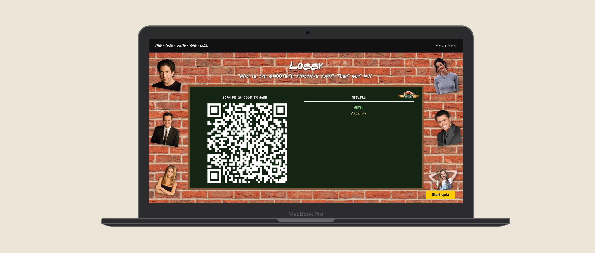
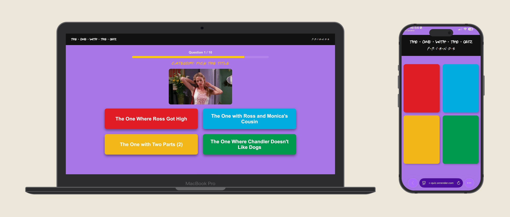
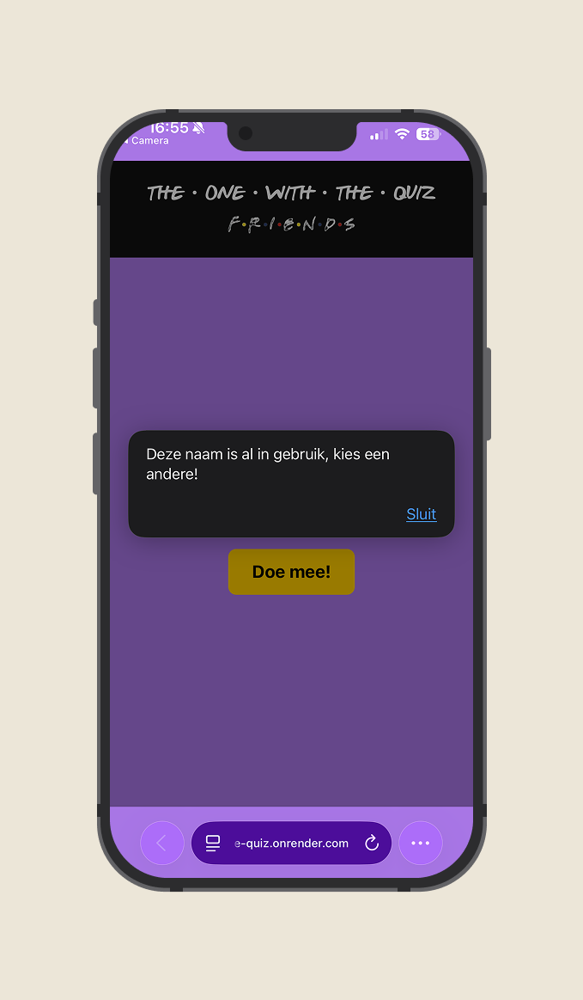

De Opdracht
Voor het vak API kreeg ik de opdracht om een server-side rendered webapplicatie te ontwerpen en bouwen met het framework Astro. In de webapplicatie moest ik gebruikmaken van minimaal 2 web API’s en 1 content API. Ik koos ervoor om een real-time, dual-screen multiplayer quiz over de serie ‘Friends’ te maken.
Mijn Aanpak
Omdat ik dit project solo uitvoerde, was ik verantwoordelijk voor de volledige cyclus: van het uitdenken van de user flows en het ontwerpen van de interface, tot het schrijven van de logica. Daarbij stonden de volgende vijf UX/UI-principes centraal:
1. Context-Aware UI (Dual-Screen Experience)
Ik ontwierp een gescheiden dual-screen experience, omdat de context van de gebruiker per scherm verschilt. Het host-scherm (vaak getoond op een grotere monitor) is ontworpen voor overzicht en passieve consumptie: grote typografie, duidelijke leaderboards en de nadruk op de huidige vraag.
De speler-interface (smartphone) is daarentegen ontworpen als een 'controller'. Hier is alle afleiding geminimaliseerd en ligt de focus volledig op grote, duidelijke knoppen om de cognitieve belasting tijdens de tijdsdruk te verlagen.

2. Visibility of System Status (Real-time Feedback)
Waar traditionele web-apps vaak vereisen dat een gebruiker de pagina ververst of wacht op een laadscherm, heb ik door middel van WebSockets gezorgd voor instant visual feedback.
Zodra de host een vraag start of de tijd om is, veranderen de statussen op de schermen van alle spelers synchroon (zoals het rood of groen kleuren van het telefoonscherm wanneer de uitslag van een vraag bekend is). De speler is hierdoor op elk moment, zonder vertraging, op de hoogte van de status van het systeem.
3. Forgiving UI (Error Prevention)
Een goede gebruikerservaring straft de gebruiker niet af voor kleine menselijke foutjes of onzichtbare
systeembeperkingen. Voor de open vragen schreef ik een stuk forgiving input handling (via de
.trim() en .toLowerCase() methodes in JavaScript).
Hierdoor wordt een antwoord als " 3 " achter de schermen netjes gelezen als "3". Dit voorkomt dat een antwoord onterecht fout wordt gerekend en zorgt daarmee voor een veel betere en vloeiendere gebruikerservaring.
4. Edge Cases & Error Recovery
Bij een multiplayer game kunnen er altijd onverwachte dingen gebeuren. Ik heb de user journey ontworpen met edge cases in gedachten. Wat als twee mensen dezelfde naam kiezen in de lobby?
Het systeem crasht niet, maar geeft direct contextuele feedback in de UI, zodat de speler zelfstandig de fout kan herstellen ("Kies een andere naam").

5. Emotional Design
Mensen leren, spelen en navigeren beter in een omgeving die ze plezier geeft (het Aesthetic-Usability Effect). Ik heb emotional design toegevoegd door het Friends-thema in elk detail door te voeren in de UI. Denk aan typografie, kleuren en het beroemde Friends-fotolijstje. De consequente doorvoering van dit thema maakt de applicatie memorabel en sfeervol.